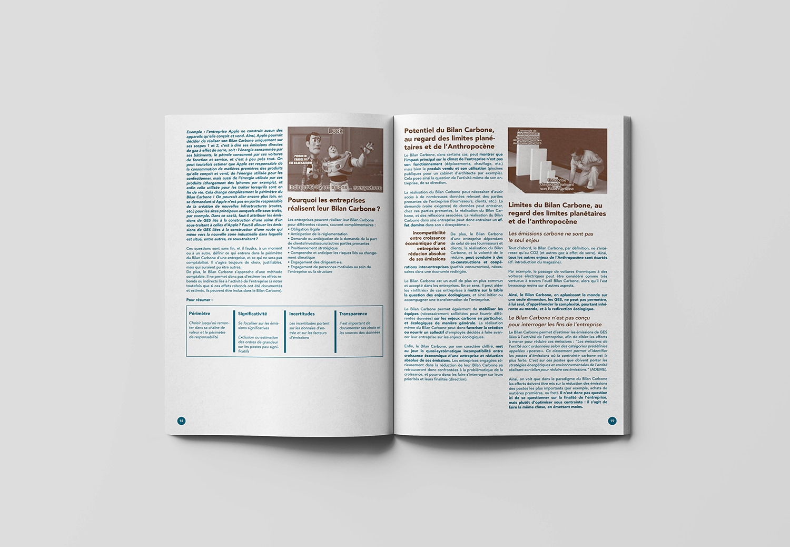
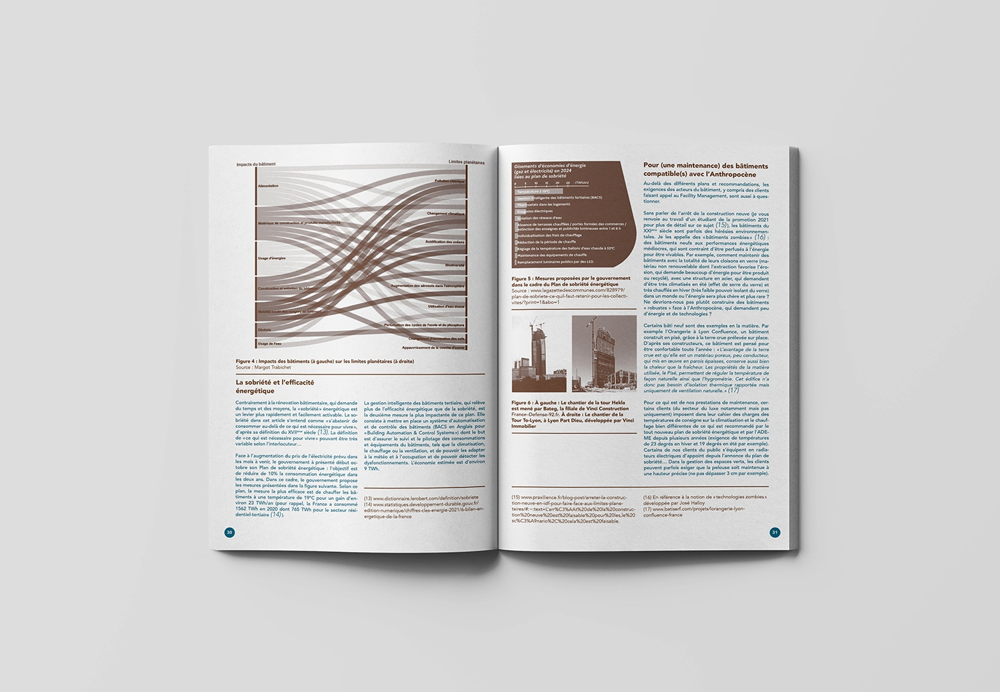
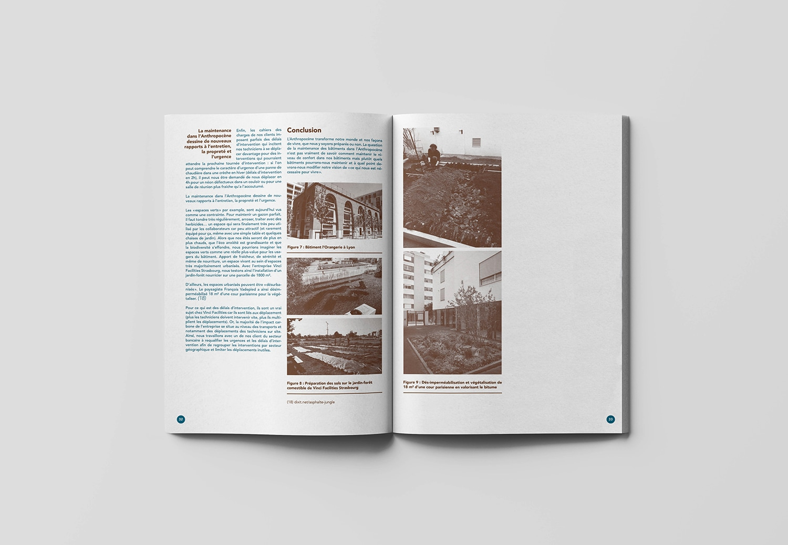
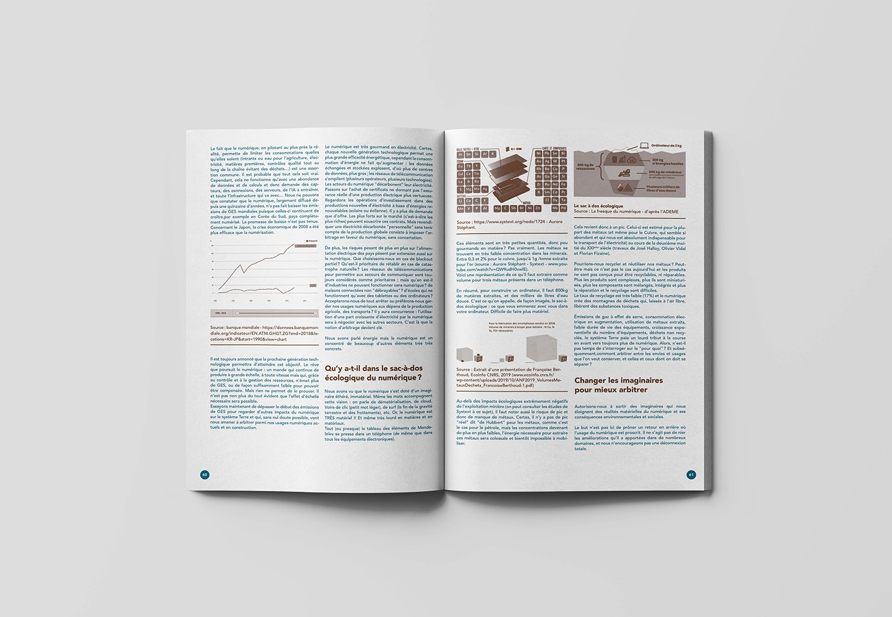
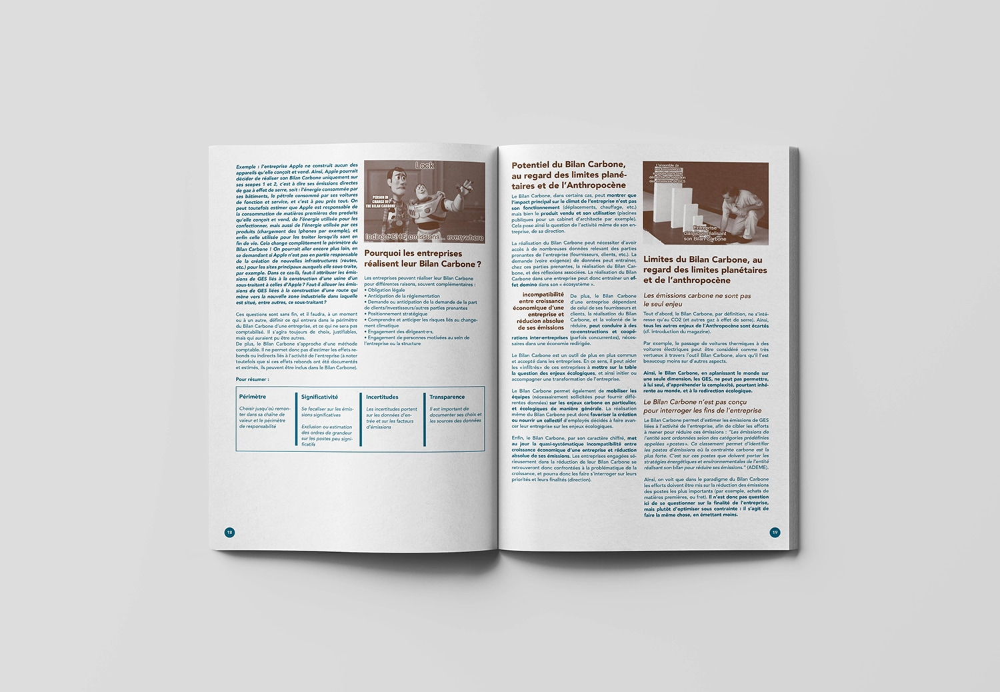
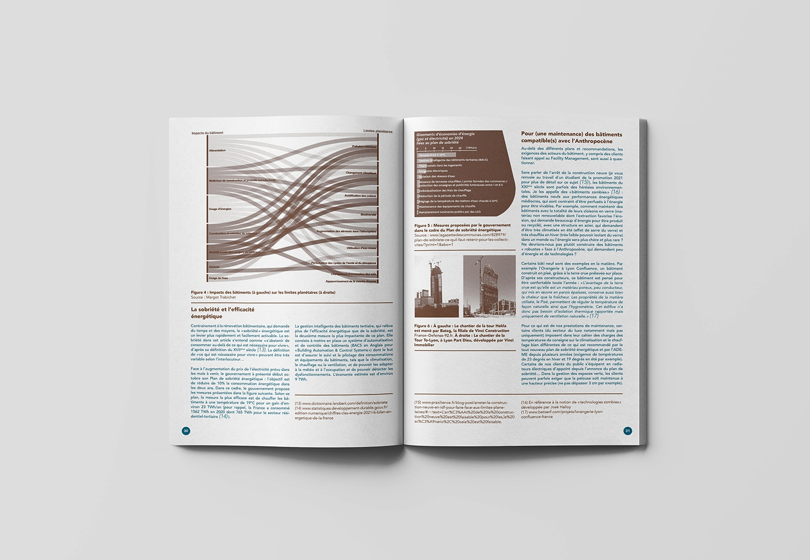
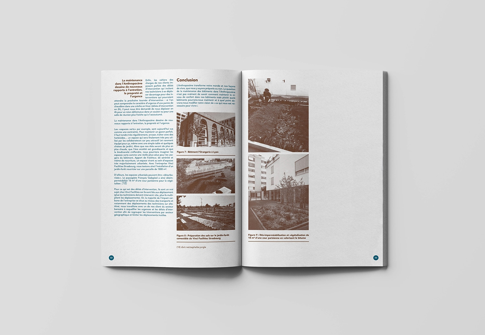
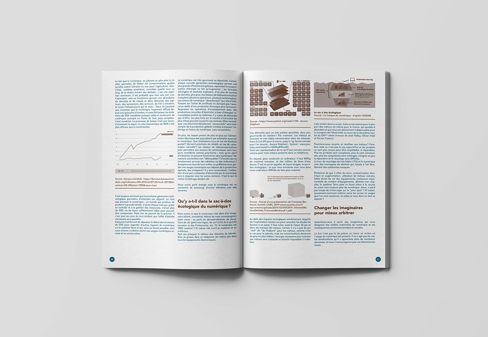

Redirection Écologique
Mise en page de la revue : Redirection Écologique, qui rassemble les recherches et détaille les travaux des étudiant·es de la promotion 2021 - 2022 du MSc "Strategy &
design for the Anthropocène" — ESC Clermont Business School x Strate, École de Design, Lyon — dirigé par Alexandre Monnin.
La charte graphique a été conçue par Xavier Four, designer au sein de Bureau d'Études.
21 x 29,7 cm, 92 pages, imprimé en risographie 2 couleurs,
et disponible en version numérique.
 






